事件
先了解 Mobilebone 中与页面生命周期相关的事件。
生命周期
Mobilebone 中，页面从进入到离开为一个完整的生命周期。
整个生命周期过程如下图所示，Mobilebone 在生命周期的各个阶段都暴露了接口可以让开发者自定义事件。

其中：
preventdefault事件在进入和离开之前都会执行；onpagefirstinto事件只会在第1次进入的时候执行；callback事件每次页面进入的时候执行；fallback事件每次页面离开的时候执行；animationstart事件在进入和离开动画执行前都会执行；onpagefirstinto事件在进入和离开动画执行后都会执行。
生命周期事件
Mobilebone 中生命周期事件分全局事件和局部事件。
其中，全局事件使用 Mobilebone 对象直接指定，例如希望所有页面进入的时候都执行，可以这样设置：
Mobilebone.callback = function () {
console.log('每次页面进入都执行');
};
局部事件则通过 data-* 的语法在页面容器元素上设置，例如：
<div class="page out" data-callback="someFuncName">
<p>页面内容</p>
</div>
表示该页面进入的时候会执行函数名为someFuncName的方法。在默认状态下，Mobilebone 会在 window 对象中寻找 someFuncName 函数并执行。
但显然，函数挂载到 window 对象中并不适合复杂的项目，Mobilebone 是支持指定局部函数挂载的对象的，通过 Mobilebone.rootTransition 属性进行设置。
例如有个 Vue 实例对象 myVue：
var myVue = new Vue({
methods: {
someFuncName () {}
}
});
则下面的设置就可以让 Mobilebone 调用 Vue 实例对象中的方法：
Mobilebone.rootTransition = myVue;
每个生命周期事件都暴露了若干参数，例如：
callback(pageIn, pageOut, options);
开发者就可以知道当前移入移出的页面是哪个，以及页面间传递的参数是什么（通过 options.query 获取）。
更多信息可以参见 API 文档中的：Mobilebone.rootTransition
页面事件
发现错误？想参与编辑？在 GitHub 上编辑此页！